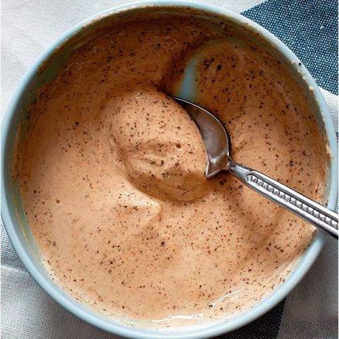

Zesty Sour Cream

Description
Spicy and delicious sour cream that adds a punch to any dish.
Ingredients
- 4 oz sour cream
- 1.5 teaspoons spicy brown mustard
- 1/2 cup corn starch
- 1.5 tablespoons sriracha (or any other hot sauce)
- 1 - 1.5 teaspoons paprika (or use cayenne for a spicier version)
- 1 teaspoon garlic powder
- 1 - 2 teaspoons lime or lemon juice
- Salt and pepper to taste
Instructions
- Mix all ingredients together in a bowl. Add water one teaspoon at a time until sour cream is to a consistency you like.
- Serve with your favorite dishes, like potato tacos.